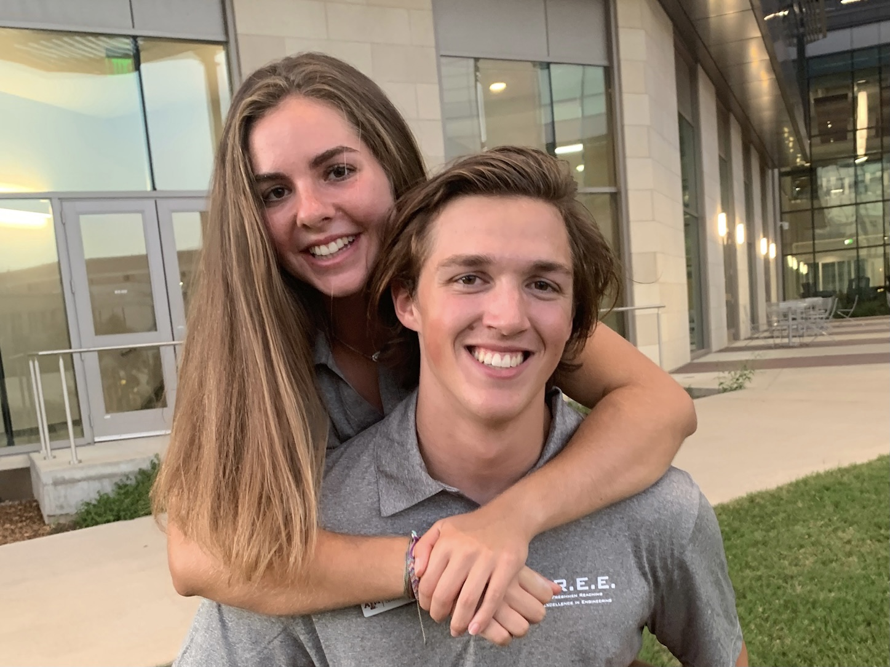

About Me
Hi! My name is Emily Wax and I'm a Senior Computer Science Major at
Texas A&M. I am from Frisco, TX
and have been involved in STEM ever since high school where I cofounded the Girls in STEM club and got involved in
FRC robotics my senior year at
Reedy High School.
I've continued to foster my love of engineering in college through hackathons, my classes, mentoring robotics, and becoming a counselor
for FREE (Freshmen Reaching Excellence in Engineering). In my free time I enjoy playing instruments such as
electric bass, keyboard, and guitar. I also have a passion for the outdoors. I work at
Texas A&M Outdoor Adventures, am a member of
Aggie Outdoors, and really enjoy climbing, slacklining, hiking, and travelling as well.
Whether I'm working on a programming project or climbing a route, I love problem-solving in any way, shape, or form, and enjoy the challenge
of solving these mental and physical problems. As a computer scienctist, I'm looking a passionate, creativity-driven environment where
I can grow along with a company. To learn more about me, be sure to connect with me and click the links to access the other sections of my website.
